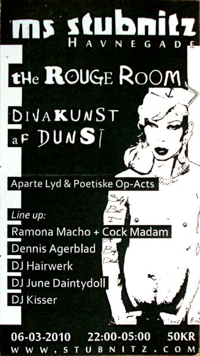

| dunst på Stubnitz | 6. Martz 2010 |
 |
|
dunst fest på Stubnitz.Live acts:Dennis Agerblad, Cock Madam (med Ramona Macho), Miss Fish. DJ's: Hairwerk, Kisser, June Daintydoll. Sted: Båden Stubnitz, Havnegade 1, til venstre ved KnippeBro. Tid: 22:00 - 05:00 Members Only Gratis membership. |
|